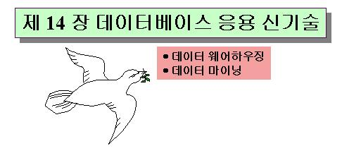

 |
|
목 차 |
시작하기전에....본 강의에서는 데이터베이스 응용을 위한 신기술과 관련한 데이터웨어하우징과 데이터마이닝의 개념을 소개합니다. 여러분들은 다음 사항들을 유념하여 강의에 임해주길 바랍니다.
|
본 강의에서는 제 13 회 강의에 이어 현재 데이터베이스 응용 신기술로 대두되고 있는 데이터 웨어하우징과 데이터 마이닝에 대한 개념과 응용에 대하여 다룬다. 1.테이터 웨어하우징
최근 들어 의사결정 지원 시스템(Decision Support System : DSS)이나 관리 정보 시스템(Executive Information System : EIS)의 중요성의 증가로 요구 분석 작업을 거쳐 의사결정에 필요한 정보를 사용자에게 효율적으로 제공하기위해 과거로부터 누적된 이질적이고 방대한 양의 데이터를 통합관리할 필요성이 증가하게 되었다. 이제까지의 데이터들은 그날 그날의 비즈니스 요구조건만을 충족하는 소위 운용 데이터(operational data)로서 이용되기 때문에 이러한 데이터들을 기반으로 의사결정을 위한 데이터 처리는 매우 오랜 시간이 걸리는 작업이었다. 따라서 전략적인 의사결정을 위해서는 자세한 운용 데이터보다는 이것을 전사적인 차원에서 보는 뷰(view)이라고 할 수 있는 분석정보가 필요하다. 이러한 분석정보는 운용 데이터보다는 External Data나 Historical Data의 결합으로 이루어 진다. 그러나 이 같은 분석 정보를 얻는 일은 상당히 시간을 요하며 시스템 자원도 많이 필요로 하기 때문에 이에 대한 해결책으로 제시되는 것이 바로 데이터 웨어하우징(Data Warehousing)이다. 데이터 웨어하우징이란 의사결정을 위해 필요한 분석정보를 자동으로 모아주고 결합시켜 사용자들이 원하는 형태로 제공해주는 것으로 정의된다.
1.1 데이터웨어하우징의 개념과 고려사항데이터웨어하우스의 개념운용 데이터는 복잡한 구조로 저장되어 있어 이 데이터에 접근하기 위해서는 복잡한 프로그래밍 툴을 사용해야 한다. 편의를 위해 코딩된 데이터가 의미있게 표시되지 않는 경우가 많기 때문에 데이터의 의미를 파악하기 힘들다. 사용자가 시스템을 본래 목적외의 다른 목적으로 사용하길 원하는 경우가 많고 이를 처리하기 위한 데이터가 여러 다른 시스템에 퍼져 있는 경우가 많다. 그러나, 데이터는 시간이 경과됨에 따라 변하고 특정시간 동안의 데이터에 대해 요약하기 힘들다. 위에서와 같이 운용 데이터가 의사결정을 위한 요구를 만족시키고 있다고 보기 어렵기 때문이다. 따라서 이들 데이터가 전략적인 의사결정에 활용될 수 있도록 변형, 통합하는 작업이 필요하며 이를 데이터 웨어하우징이라고 한다. 데이터 웨어하우스는 운용 데이터를 "분석정보"로 바꿔주기때문에 데이터 웨어하우스안에 있는 정보는 조직의 요구 사항에 기초를 두고 있으며 다양한 종류나 형태의 데이터를 끌어내어 사용자의 질문에 적합한 정보를 제공할수 있게 된다. 고려사항따라서 성공적인 데이터 웨어하우스는 계량적인 또는 계수적인 결과치를 줄 수 있어야 하고 적은 비용으로 실행하고 유지 할 수 있어야 하며, 운용 데이터, External Data, Historical Data 모두을 종합할 수 있도록 설계되어야 한다. 또한 자체 아키텍처가 유연하고 확장할 수 있어야 한다. 즉 정보수용능력을 확장할 수 있어야 하며 새로운 형태의 저장방식이나 액세스 방법에도 대처할 수 있어야 한다. 데이터 웨어하우스는 데이터가 일정한 주제별로 모아져야 하며 비록 각각의 데이터가 서로 다른 하드웨어나 운영체제 하에 저장되어 있다고 해도 이로 인해 제한을 받아서는 안되고 데이터 웨어하우스 자체는 "읽기 전용"이어야 하며 데이터 웨어하우스내의 데이터는 운용 데이터와는 달리 장기간에 걸친 데이터들은 일정기간 단위별로 소위 "스냅 샷(Snapshot)"을 통해 저장되어 이들이 트랜잭션 처리가 아니 분석 및 의사결정 지원용으로 활용되어햐 한다.
1.2 데이터 웨어하우스의 특징데이터 웨어하우스의 특징은 다음과 같다.
1.3 데이터웨어하우스와 운용 데이터베이스의 차이점데이터 웨어하우스와 일반적인 운용 데이터베이스는 사용자의 요구사항과 데이터의 시간의 취급 측면에서 다르며 이에 대하여 자세히 설명하면 다음과 같다.
1.4 차원 모델운용 시스템은 트랜잭션 처리 성능이 가장 중요하기 때문에 데이터 베이스를 설계할 때 ER 모델(entity-relationship model)을 사용하고 데이터 종속성(data dependency)을 이용한다. ER 모델(entiry-relationship model)은 데이터의 중복을 제거하는데 효과적이고 데이터의 중복이 없으면 갱신 트랜잭션은 한 군데의 데이터만을 접근하면 되기 때문에 트랜잭션 처리속도에 절대적인 기여를 해왔다. ER 모델을 이용하여 데이터베이스를 설계할 경우 실세계의 개체 집합과 개체 집합과의 관계성을 식별하여 각 개체 집합을 하나의 테이블로 정의하여 릴레이션 스키마로 모델화되고, 인접한 테이블간에는 서로 연결되므로 떨어져있는 두 테이블간에는 연결경로가 복잡하고 다양하다. 스키마가 개체 집합 및 개체 집합간의 관계성, 데이터의 종속성 등 데이터의 특성을 중심으로 설계되면 테이블간의 중요도에 차이가 없고 많은 수의 테이블이 포함되므로 복잡하다. 따라서 사용자 입장에서 원하는 중요한 데이터가 여러 개체에 흩어져 있기 때문에 이들을 모으려면 여러번의 조인을 포함하는 질의를 작성해야 하고 스키마를 이해하기에 복잡하며, 사용자의 관점에 따른 질의 작성은 어렵게 된다. 스키마가 매우 복잡하여 질의에 인접하지 않은 두 테이블이 포함된다면 그들간의 연결 경로는 매우 많다. 또한 각 경로는 비용이 서로 다르고 매우 다양하기 때문에 최적의 경로는 찾기가 어렵다. 최선의 경로를 선택하더라도 경로에 따라 조인 연산을 해야 하므로 응답을 얻으려면 여러 번의 조인 연산을 해야 한다. 연속적인 조인 연산은 응답시간을 크게 지연시키므로 개체-관계모형에 따른 데이터베이스 탐색은 여러 번의 조인을 수행해야 하는 질의 처리 성능을 크게 떨어뜨린다. 차원모델은 사용자 관점에서 스키마를 작성하며 업무상 중요한 수치 데이터와 이들을 설명하는 설명 데이터를 다른 테이블로 분리하여 설계하며 사용자가 중요하게 다루는 정보를 효과적으로 보존하고 볼 수 있도록 한다. 테이블간의 경로도 간단해서 사용자가 질의를 쉽게 작성할 수 있다. 차원모델은 사용자가 중요한 데이터를 구별하여 하나의 테이블에 모아 놓기 때문에 스키마에서 테이블간의 중요도가 서로 다르다. 사용자의 관점에서 중요한 데이터를 포함하는 테이블을 스키마의 중심에 놓고 이들을 분석하기 위한 관점을 나타내는 테이블을 주변에 배치한다. 차원 모델은 다음 내용의 사실과 차원을 표현한다. 사실(fact) : 중심 테이블로 사용자가 중요하다고 생각하는 모든 데이터를 저장하므로 매우 크다. 차원(dimension) : 주변 테이블로 사용자가 데이터를 분석하고자 하는 목적을 충족시키기위한 차원으로 사용자가 정보유지 데이터를 분석하고자 하는 주요 분석요인(factor)를 의미한다. 단지 사실테이블을 보조하는데이터를 포함하여 크기가 매우 작다. 차원 데이터베이스의 스키마를 스타조인 스키마(star join schema)라 한다. 이것은 하나의 매우 큰 중심테이블과 주변의 작은 테이블로 구성된 스키마의 모양이 별 모양인 것에서 유래되었다. 따라서 스키마는 하나의 작은 테이블에 모여 있기 때문에 직관적으로 이해할 수 있고 질의 작성도 쉽다. 사실테이블차원 데이터베이스 중 가장 큰 테이블로 조직의 활동에 의해 발생한 중요한 수치를 사실(fact)로 저장한다. 각 사실은 모든 차원의 교차점에서 취해진 값이며, 따라서 각 사실 테이블의 주키(primary Key)는 모든 차원을 결합한 결합키(Combined-Key)이다. 이러한 결합키는 차원 테이블과 조인할 수 있는 유일한 수단이다. 사실 테이블의 사실은 연속적인(continuos)이고 가산적인(additive)값으로 덧셈이 가능하다. 따라서 대단히 많은 수의 레코드로부터 사실을 사용자 요구에 맞도록 계산하여 수십개의 레코드로 요약하여 답을 제공할 수 있다. 차원 테이블차원 테이블은 기업활동의 결과에 대해 사용자의 주요 분석요인(factor)을 서술한다. 차원의 각 레코드는 특정 상품을 나타내며 많은 속성으로 구성된다. 속성의 자료형은 문자형이며 이산형으로 속성은 상품을 품목, 품종등의 계층구조로 분류하듯이 특징을 계층적으로 서술하기도 한다. 사용자는 이러한 계층구조를 따라 품목별 판매금액을 집계하여 실적을 분석한다. 차원 테이블의 속성의 중요한 역할은 질의에서 제한 조건으로 사용되거나 사용자의 응답에서 표제로 사용되는 것이다. 데이터웨어하우스의 질의는 drill-up과 drill-down 형태로 처리될 수 있다.
차원 데이터 웨어하우스의 설계 기법 차원 데이터 웨어하우스의 설계기법은 매우 단순하며 이론적인 근거가 있는 것이 아니고 사용자의 요구사항을 만족하도록 다음과 같이 진행된다. 단계.1 : 처리 요구사항을 정의하고 처리의 중심 대상을 사실 테이블로 정의한다. 단계.2 : 사실 테이블에 저장할 중요 데이터를 결정한다. 단계.3 : 사실 테이블의 데이터를 분석할 주요 요인을 차원으로 결정한다. 단계.4 : 사실 테이블에 대한 집계사실의 수준을 결정한다. 단계.5 : 차원의 설명을 포함하여 차원의 속성을 정의한다. 단계.6 : 집계 사실의 저장 방법을 결정한다. 처리 상황을 분석하면 처리에 중요한 사실 테이블들이 각 처리 사항으로부터 설정된다. 사실 테이블이 상세하게 설계되기 전에 사실 테이블의 레코드가 무슨 내용이어야 할지, 즉 단위 정보를 정의하여야 한다. 전형적인 단위 정보는 하나하나의 거래 내용, 일별 스냅샷 또는 월별 스냅샷등이다. 사실 테이블의 단위 정보가 결정되면 차원을 식별하고 차원의 단위정보도 정의할 수 있다. 차원이 결정되면 사실 테이블을 위한 수치 사실을 찾고, 마지막으로 차원 레코드의 속성을 채워 넣는다. 데이터 웨어하우스의 설계에서 수치 데이터 처리에 문제가 있을때는 값의 특징을 기준으로 결정한다. 수치데이터가 시시각각으로 연속적으로 변하면 사실로 정하고, 이산적이고 시간에 따라 변하지 않으면 속성으로 정의한다. 1.5 집계 사실의 저장방법사실 테이블은 엄청나게 많은 단위 정보인 기초수준의 레코드를 포함하고 있다. 사실 테이블이 기초 레코드만을 가지고 있다면 질의를 처리할 때 수 많은 기초레코드를 읽어서 요약을 해야하기 때문에 처리에 오랜 시간이 필요하다. 따라서 기초 레코드를 요약한 집계 사실을 저장하여 질의를 처리할 때 사용하면 질의 처리 시간을 줄일 수 있다. 집계 사실로 인한 질의 처리 성능향상은 월등한 처리 성능 향상을 가져왔다. 따라서 데이터 웨어하우스의 설계에서 집계 사실의 저장은 매우 중요한 설계원칙으로 다루어져야 한다. 집계사실 저장 방법은 다음과 같다. 1) 집계 사실을 위한 새로운 테이블 생성 많은 집계테이블이 생성되어 스키아가 복잡해지는 단점이 있는 반면 다음과 같은 장점이 있다. 2)집계 사실을 위한 수준 항목의 추가 차원 테이블에 수준 항목을 사용하여 집계 사실을 새로운 차원 키와 함께 사실 테이블에 저장하는 것이다. 같은 수의 집계 레코드를 생성하고 차원 테이블과 사실 테이블에 집계 키를 생성한다. 문제는 질의 항목에 대한 정의가 잘 되어 있지 않으면 집계 사실뿐만 아니라 기초 사실도 검색될 수 있다는 점이다. 그러나 이런 문제를 방지하는 것은 매우 어렵기 때문에 이 방법보다는 집계 사실을 별도의 집계 사실로 저장하는 것이 좋다. 1.6 메타데이터(meta data)메타 데이터란 데이터에 관한 데이터로 파일이나 데이터베이스의 디렉토리 정보 등이 그 예이다. 데이터 웨어하우스 내의 메타데이터는 원천(source) 데이터 수집, 데이터 웨어하우스 내에 저장, 가공, 검색, 보급, 교환, 폐기등에 관련된 데이터이다. 정책 결정을 지원하기 위한 환경에서의 최종 사용자인 데이터 분석가들은 새로운 유용한 정보들을 발견하고, 데이터 사이에 상관 관계를 찾고자하기 때문에 사용자가 데이터 웨어하우스를 효과적으로 사용하기 위해서 메타 데이터는 반드시 정확하고 최신의 것이어야 한다. 데이터 웨어하우스 구축은 운영 시스템에서 데이터를 추출하고 적당한 변환작업을 거쳐 통합하는 작업에서 즉 메타데이터를 구축을위한 메타데이터가 요구된다. 또한, 구축된 데이터 웨어하우스에서 사용자의 질의에 따라 데이터를 분석하고 처리하는 작업에서 데이터 활용을 위한 메타데이터도 요구된다. 1)구축을 위한 메타데이터. 운영시스템에서 데이터 웨어하우스로 데이터가 유입되는 동안 거치는 작업들에 관한 정보로 매우 복잡하다. 데이터웨어하우스를 설계하고 구현하는 노력의 80%를 이 작업에서 소비하며 작업의 어려움은 크게 두가지 이유를 갖고 있다.
2) 활용을 위한 메타데이터 활용을 위한 메타데이터는 데이터 웨어하우스 자체관리와 사용자를 지원하기 위한 정보를 포함하고 있으며 3개의 계층으로 나눌 수 있는데 데이터 웨어하우스의 관리를 위한 메타데이터, 질의 처리 지원을 위한 메타데이터, 사용자 지원을 위한 메타데이터의 3계층이다.
3) 사용자 지원을 위한 메타데이터 분석자들이 알고자하는 요구사항을 충족시키기위한 메타데이터 탐색기는 메타 데이터에 대해 브라우징(browsing), 탐색(searching)등의 기능을 제공한다.
2. 데이터마이닝
데이터마이닝이란 방대한 양의 데이터 속에서 쉽게 드러나지 않는 유용한 정보를 찾아내는 과정이다. 기업이 보유하고 있는 일일 거래 데이터, 고객 데이터, 상품 데이터 혹은 각종 마케팅활동의 고객 반응 데이터 등과 이외의 기타 외부 데이터를 포함하는 모든 사용 가능한 근원 데이터를 기반으로 감춰진 지식, 기대하지 못했던 경향 또는 새로운 룰 등을 발견하고, 이를 실제 비즈니스 의사결정 등을 위한 정보로 활용하고자 하는 것이 바로 데이터마이닝이다. 2.1 데이터마이닝의 출현배경80년대 이후 급속한 성장을 이룬 정보기술의 발달에 근거하여 기업들은 수십 기가 이상에 이르는 방대한 양의 데이터를 저장하고 관리하기 위한 데이터베이스 구축에 많은 투자와 노력을 들여왔다. 그리고 이러한 대용량 데이터베이스를 실제 업무에 있어서의 활용도를 높이기 위한 방편으로 정제되고 일관성 있게 통합된 형태로 쌓아 두고자 하는 데이터웨어하우스의 구축이 시도되고 있다. 즉, 기업이 얻고자 하는 정보의 근간은 바로 각 기업이 보유하고 있는 고객, 상품, 경쟁사 관련데이터 등과 매일 발생하는 거래 데이터이다. 정보기술 및 시스템의 발전으로 이러한 데이터들을 보다 손쉽게 접근할 수 있고 효과적으로 활용할 수 있도록 관리할 수 있게 되었다. 또한, 과대해지고 있느 기업경쟁의 상황에서 점점 더 다양화되고 개성화되고 있는 고객들의 요구에 대한 적절하고 빠른 대응이 기업간의 경쟁력 척도가 되고, 지속적인 경쟁우위를 확보하기 위해서는 효과적이고 합리적인 그러면서 신속한 전략 또는 의사결정이 더욱더 중요한 요소가 되고 있다. 이러한 상황에서 이제 새로운 관심은 데이터를 잘 쌓아 놓는 단계를 넘어서 데이터라고 하는 거대한 창고에서 보다 가치 있는 정보를 효과적으로 찾아내고자 하는 부분으로 모아지고 있다. 이에 이미 알려져 있고 기대했던 정보 뿐만 아니라 전혀 예상하지 못했고, 쉽게 드러나지도 않는 정보까지를 데이터베이스나 데이터웨어하우스로부터 찾아내고자 하는 목적하에 개념적인 정보추출방법론인 데이터마이닝이 시장에 등장하게 되었고, 이는 데이터웨어하우스와 함께 향후 정보산업을 이끌 주제가 되고 있다. 2.2 데이터마이닝과 데이터웨어하우징과의 관계데이터마이닝을 통해 정확하고 올바른 결과를 얻기 위해서는 적용 대상이 되는 데이터에 오류가 없는 정제되고 표준화된, 일관성있는 체계적인 구조로 준비되어 있어야 한다. 그러나 일반적으로 기업이 가지고 있는 데이터들은 다양한 운영계 시스템으로부터 다양한 형태로 모아지므로 각기 다른 형식과 코드를 가지고 있을 수 있고, 따라서 서로 일치하지 않거나 부정확한 값을 가지고 있는 경우가 많다. 그러므로, 먼저 이러한 문제들이 해결되어 양질의 데이터가 보장된 후에야 비로서 효과적인 데이터마이닝을 수행할 수 있다. 이러한 부분들은 데이터웨어하우스가 구축되어 있다면 보다 쉽게 해결될 수 있다. 따라서, 데이터웨어하우스가 데이터마이닝을 위한 필수 불가결한 조건은 아니지만 효율적인 데이터마이닝을 위한 출발점이 된다고 볼 수 있다. 또한 데이터마이닝은 데이터웨어하우징의 가장 중요한 핵심적인 적용업무 중 하나이다. 그리고, 데이터마이닝은 SQL 혹은 OLAP을 이용한 단순한 정보의 요약이 아니므로 준비되어야 할 데이터는 요약된 데이터보다는 오히려 보다 상세한 세부데이터와 기록(Historical)데이터들이다. 그러므로, 데이터마이닝을 고려하면서 데이터웨어하우스를 계획한다면 이러한 부분들을 염두에 두고 전체 데이터웨어하우스 내에 데이터마이닝을 위한 데이터마트가 마련되어야 한다. 2.3 데이터마이닝의 진행 방법데이터마이닝은 신경망모형(Neural Networks)이나 의사결정 트리(Decision Tree)와 같은 특정 기법이 아니라 개념적인 정보추출의 방법론이며 일련의 과정(Process)이다. 실제 데이터마이닝이 적용되는 프로세스를 살펴보면 다음과 같은 단계로 나누어 볼 수 있다. 단계0. 문제정의 : 적용하고자 하는 비즈니스 문제 정의 및 목표 결정 단계1. 데이터베이스/데이터웨어하우스: 정의된 비즈니스 문제에 따라 필요한 데이터를 선정하고 준비 단계2. 데이터마이닝 과정 : 준비된 데이터를 샘플링하고, 사전분석을 통해 탐색하고 변형과정을 거친 후 적절한 데이터마이닝 기법을 이용하여 정보의 패턴을 발견/평가 단계3. 비즈니스 레포트/그래프 : 데이터마이닝과정에서 얻어진 결과물에 대해 사용자가 쉽게 이해할 수 있도록 비즈니스의 문제와 목적에 맞게 재표현하는 단계 단계4. 의사결정: 데이터마이닝으로부터의 정보를 기반으로 전략이나 의사결정을 통한 실제 업무로의 활용 단계5. 피드백(Feedback): 실제 업무에서의 적용 후의 결과나 효과를 토대로 향상된 정보를 얻기 위해 데이터마이닝의 초기단계로 회귀 2.4 데이터 마이닝을 위한 사전 계획과 준비데이터마이닝을 하려면 상당한 사전계획과 준비가 필요하다. 먼저 데이터마이닝의 필요성을 충분히 인식하고 현 비즈니스 문제에 대해 잘 이해하고 목적이 무엇인지를 확고히 할 팰요가 있다. 정확한 문제의 이해 없이 성공적인 데이터마이닝을 수행할 수 없다. 또한, 데이터마이닝의 결과로 얻어진 정보를 어떻게 활용할 것인가 하는 실제 업무와의 연계성도 충분히 고려해야 한다. 그 다음은 가지고 있는 데이터를 데이터마이닝을 할 수 있는 적정 상태로 준비하는 작업이다. 적용대상업무에 따라 차이는 있지만 실제로 데이터마이닝 수행시 데이터가 제대로 준비되지 않은 상태에서 필요한 테이블을 연결하고 양질의 데이터를 준비하는 작업은 많게는 전 과정의 80%이상의 시간과 노력이 소비되기도 한다. 일단 작업대상이 되는 데이터가 준비되면 단순한 SQL을 이용한 질의나 OLAP, 여러 가지 그래픽적인 방법들(Visualization) 혹은 통계적인 방법들을 사용한 일종의 사전분석을 통해 데이터에 대한 기본적인 정보를 얻고 데이터를 이해하고 윤곽을 잡을 수 있다. 이러한 탐색과정에서의 정보를 기반으로 하여 통계적인 방법들을 비롯한 적절한 데이터마이닝의 기법들이 적용된다. 이러한 과정을 통해 얻어진 고급정보는 그 의미와 정도에 대해 해석하고 평가하는 단계를 거쳐 실제 업무의 목적에 적합한가를 판단한다. 다음은 실제 정보의 사용자나 혹은 의사결정자가 쉽게 이해할 수 있는 형태로 재표현하고 실제 업무에 활용될 수 있는 형태로 재표현 되어 실제 업무에 활용될 수 있도록 결과물의 전달을 포함하는 사용자 환경을 구축한다. 데이터마이닝을 통해 얻어진 정보는 실제 상황에서 평가를 통해 피드백(Feedback)되어 다시 데이터마이닝에 반영되고 재분석이 되면서 얻어질 결과물의 신뢰성과 정도를 높여 가게 된다. 데이터 마이닝은 의미와 목적상 의사결정시스템(Business Intelligence System)과 함께 고려되어야 한다. 즉, 데이터마이닝 솔루션은 특정 업무에 국한되거나 단순히 데이터마이닝이 적용되기 위한 기법이나 방법론의 모음이 아니다. 다양하게 존재하는 소스데이터에 대한 용이한 접근이 가능해야 하고 유용하게 적용될 수 있는 여러 기법들을 제공할 수 있어야 한다. 어떤 문제를 다루는데 정해진 기법이나 규칙이 정해져 있는 것이 아니라 데이터에 따라 혹은 다루어야 할 문제의 성격에 따라 다양한 기법들이 적용될 수가 있어야 하기 때문이다. 데이터마이닝에서 인적요소의 역할은 매우 중요하다. 즉 사람에 의한 판단은 마이닝과정에서 매우 중요하다. 즉 사람에 의한 판단은 마이닝과정에서 매우 중요하며, 마이닝된 결과를 비교/평가하고 이를 실제 업무에 어떻게 활용할 것인가를 판단하는 것 역시 사람만이 가능하기 때문이다. 2.5 주요 활용분야데이터마이닝의 주요 활용 분야는 다음과 같다.
2.6 접근방법론과 기법데이터마이닝을 위한 접근 방법론과 기법들을 살표보면 다음과 같다. 데이터마이닝의 접근방법론
데이터마이닝 기법 데이터마이닝의 기법에는 일반적으로 통계학에서 얘기되는 여러 분석 기법들을 포함하여 연관성 측정(Associations), 클러스터링(Clustering), 의사결정수(Decision Trees), 신경망모형(Neural networks)과 같은 기법들이 있다. 1. 연관성 측정 연관성 측정은 어떤 특정 문제에 대해 아직은 일어나지 않은 답(예를 들어, 예/아니오)을 얻고자 하는 예측(Preciction)의 문제나 고객들을 특정목적에 따라 분류(Segmentation)하는 문제가 아니라, 상품 혹은 서비스(이하 상품)의 거래기록(Historical) 데이터로부터 상품간의 연관성 정도를 측정하여 연관성이 많은 상품들을 그룹화하는 클러스터링의 일종으로서, 동시에 구매될 가능성이 큰 상품들을 찾아냄으로써 시장바구니분석(Market Basket Analysis)에서 다루는 문제들에 적용될 수 있다. 2. 클러스터링 예측하고자 하는 결과변수(target)가 있는 데이터구조를 supervided 데이터라 하는 반면, 이런 예측의 대상이 되는 결과변수가 없으면 이를 unsupervided 데이터라 한다. 의사결정수 또는 신경망모형을 이용한 데이터마이닝 작업의 목적은 대체로 결과변수가 있어서, 이 결과변수에 영향을 주는 다른 변수들을 찾아내어 그들의 상호관계를 파악한 후, 이 상호관계를 근거로 추후에 일어나는 사건들에게 어떤 결과가 있을지를 예측하는 것이다. 즉, Supervised 데이터에 적합한 분석기법들인 것이다. 3.의사결정수 의사결정수(Decision Trees)는 분류 및 예측에 있어서 자주 쓰이는 기법으로 DM의 응답여부 등에 영향을 미치는 변수들과 변수들의 상호작용을 누구나 쉽게 이해할 수 있도록 굳이 통계학적인 용어를 쓰지 않더라도 설명이 가능한 기법으로 데이터마이닝을 언급할 때마다 빠지지 않고 소개되는 분석기법이다. 4. 신경망 모델 신경망 모델은 데이터마이닝에 대한 관심이 모아지면서 가장 일반적으로 언급되고 또 다양한 응용분야를 가지고 있는 기법이다. 신경망 모델은 신경생리학 분야에서 두뇌의 활동을 이해하고자 하는 목적 하에 신경의 작업을 설명하려는 시도에서 출발하여 생물학적 프로세스를 컴퓨터를 이용하여 모형화하려는 노력에서 비롯된 것으로, 80년대 이후 생물학적 활동의 모형발전과 더불어 컴퓨터 성능의 진보, 신경망 이론에 대한 통계학적인 접목으로 인해 빠르게 진보되면서 최근에는 데이터마이닝에 있어서 유용한 기법이 되고 있다. |
|